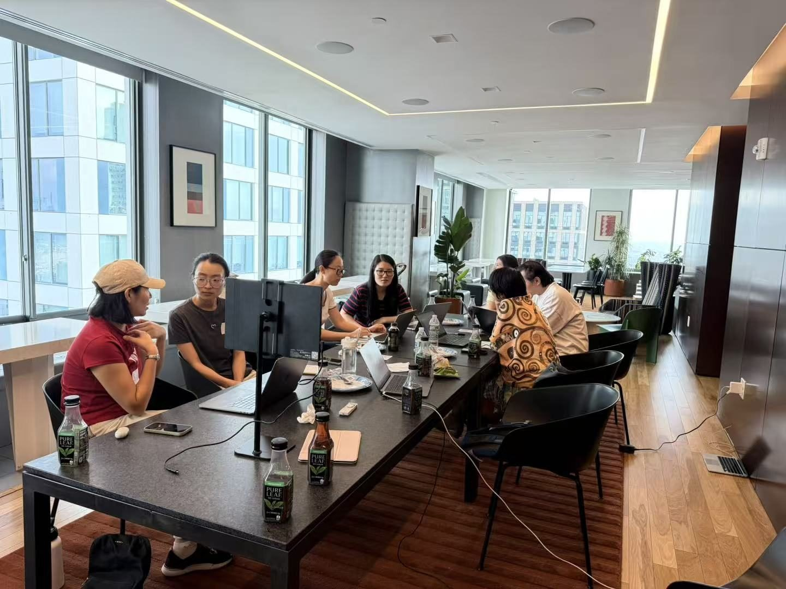
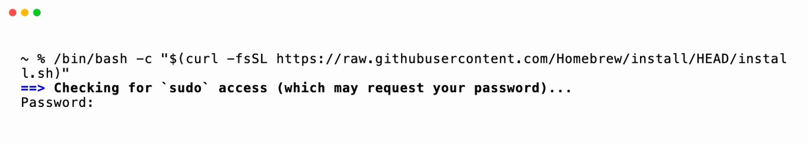
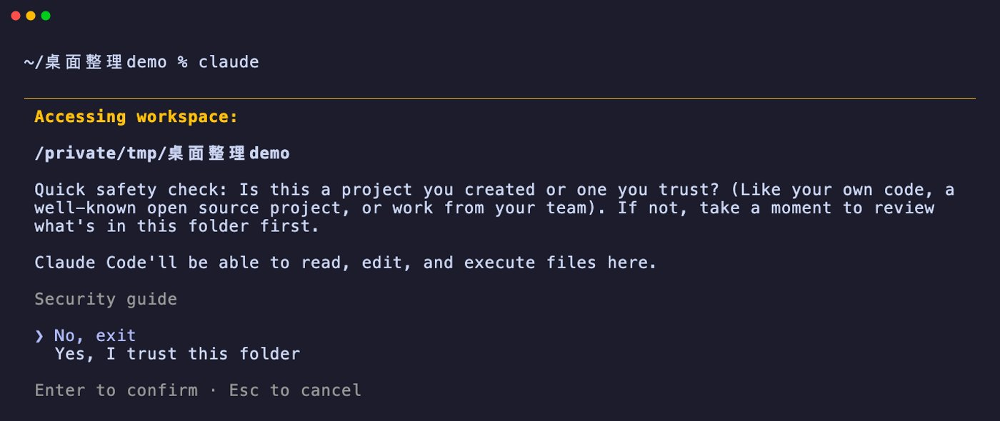

A failed AI workshop that I still count as a real success
For my first workshop, I set aside an hour for installing software.
I'd been to other people's workshops where the organizers thought thirty minutes was enough. I had already doubled it.
It took almost two hours.
That was August 22: seven participants, at my place. I wanted to teach everyone to use the terminal, plus two friendlier tools, Ghostty and Zed. I had prepared three hours of material and got through maybe a fifth of it, a quarter at most. Measured against my agenda, seventy percent of it failed. People barely had time to sit down and work on something of their own.
I run these workshops to bring agentic AI, meaning AI that actually does the work on your own computer, to people who have real professional skills but don't write code. Ever since ChatGPT came out, everyone has been talking about AI. Some people are afraid of it; some want to rein it in. But most of that conversation is about an imagined AI, and even the anxiety is about that imagined version. It seems able to do anything, yet nobody can say exactly what.
So my verdict on the first one has always been the same: it was a failed AI workshop, and I still count it as a real success.
It failed in the literal sense. Nothing went according to my agenda. It succeeded because it was the first one, and something I'd been turning over for months finally became real. By the end, most people had Codex or Claude Code (the agentic AI tools from OpenAI and Anthropic) installed on their own laptops, had touched the terminal for the first time, and had a rough idea of what agentic AI is. Some started using it as soon as they got home.
Those two hours bought me something else, too. For the first time, I could see exactly where the terminal trips people up.

Three rules I set before the first class
The first workshop didn't go as planned, but it laid the foundation for everything that came after. I haven't changed a single one of these rules since.
First, keep the jargon to a minimum. Words like LLM, MCP, and agent are hard to avoid, but I explain them in plain language. I don't want people buried in concepts from the start.
Second, safety first, then skills. Using an AI agent is a bit like learning to drive: before you learn how to drive, you learn how to stay safe. I break the risks into three kinds: your files getting damaged, your private information leaking, and getting charged money you didn't expect. The most important step is a backup. Buy an external drive, copy everything over exactly as it is, and only then let the AI touch anything. That day I also asked everyone to make one folder on their desktop and do everything inside it.
Third, start with the small, repetitive things in everyday life. Some workshops send you home with a fancy-looking web game. I'd rather people leave with practical skills that actually help them in their own lives.
That rule later grew into three use cases: organizing your own folders; turning the information you already have into your own dashboard; and pulling your calendar and messages together into your own system for reminders and to-dos. I designed them from the second workshop on, but the first one set the direction. All three are close to everyday life, and each one asks you to trust the AI with a little more than the one before.
"How do you know it's installed?"
Looking back, very little of that time went into typing commands. It was eaten up by questions. Every command was on a slide, ready to copy and paste. The commands weren't what stopped people.
"How do you know it's installed?" I heard it several times that day. Looking back, that one question sums up everything that makes the terminal hard.
For the first workshop, I started from the very bottom. To install Codex or Claude Code in the terminal, you first need Homebrew, and some computers need Xcode before that. I hadn't expected to spend time explaining what Homebrew and Xcode are, or how long Xcode takes to install. Some people had older Intel Macs, some had Windows, and one had a 2013 MacBook whose system was too old to install anything. Every computer was different, every error message was different, and we had to go through them one by one.
Usually, installing software means downloading an installer, clicking a few times, and you're done. A terminal-based AI tool doesn't work that way. You have to set up the environment first. What's Xcode? What's Homebrew? Why do I need them? What do they do? With every new thing we installed, people grew a little more uneasy, because they didn't know what they were doing.
Everyone trusted me and was willing to follow along step by step. The unease had nothing to do with trusting me. It was resistance to the unknown, and it came out as questions. At that first workshop I had no real sense of time, and I didn't stop anyone from asking. Questions deserve answers, and that's how the time got away from me.
We've spent almost twenty years with graphical interfaces, or GUIs. In a GUI, nearly everything you do gets an immediate response. Drag a file into a folder and you see it land. Click a button and it changes. When something goes wrong, a notification pops up. Icons, colors, and movement on the screen all tell you: got it.
The terminal only has text. Drag in a file or change something, and it won't show you the change itself. It just answers with a few lines of text.
The classic example is the password. The first install asks for your computer password, and when you type it in the terminal, nothing appears on screen. No asterisks, no dots. A lot of people froze: did I actually type anything?

The built-in terminal has almost no color, just a screen of text in a single color, which is tiring to read. That's why I recommended Ghostty. It's still a terminal, but with color and different font styles, it's much easier on the eyes. On that front, I also think Claude Code looks richer in the terminal than Codex or Gemini.
Then there are your files. When AI changes things on your computer, you can't see which file it touched or what it changed, so you lose any sense of control over what's happening.

What people were really missing was a sense of confirmation, the feeling of "I did something, and I can tell right away that it happened." The terminal is like a giant black box. You can't see what's going on inside. For many people, agentic AI was already a black box, and now even installing it was one.
I was also a little greedy that day. Besides the terminal, I wanted to teach Ghostty and Zed: one a friendlier terminal window, the other an editor where you can see your files and run AI side by side. Just getting things installed in the terminal was already a lot. Two more new interfaces were another hurdle. Near the end I drew a diagram on the spot: Codex and Claude are the engines, Ghostty and Zed are just skins, and the engines all run in the terminal.
Wanting it to do everything, while giving it nothing
There's another question from the first workshop that I still remember. Someone asked: can agentic AI trade stocks automatically and make money for me?
My answer was yes and no. In theory, yes, but only after setting up a lot of safety boundaries. And many of today's mainstream models will simply refuse to make those kinds of financial moves for you.
A lot of people expect too much from agentic AI. They think that with it, they can do anything, maybe without doing anything themselves. The media has a lot to do with that. When Clawdbot went viral early this year (it was later renamed OpenClaw, the one with the lobster), many of the stories online read, to me, like tech mythology.

But the moment we got to safety, the same room wanted as much security and privacy as possible, and would rather not give their AI agent any data at all.
Put those two wishes side by side and they contradict each other. If you want it to work like a personal assistant and take care of things for you, it has to know your business. The less you give it, the less personal it can be. The more you give it, the more you worry about leaks. I think this tension is very real, and it isn't only a workshop problem. Every AI product from here on will run into it.
The gap I came looking for
One reason I run these workshops is to see for myself where people get stuck, and then think about what the next generation of AI interfaces should look like. The first workshop gave me my first answer: "How do you know it's installed?"
It took graphical interfaces decades to get to the point where one click tells you what happened. Agentic AI can do far more for us than earlier software ever could, but a way for people to confirm at a glance that it actually did something is still missing.
After everyone left, I made one more call: this course doesn't work online. In person, I could walk over and look at each person's screen, and even then I couldn't keep up. Online would only be harder.
By the fourth workshop, I had proved myself wrong. That's a story for another post.

You're welcome to bring my workshop to your community.